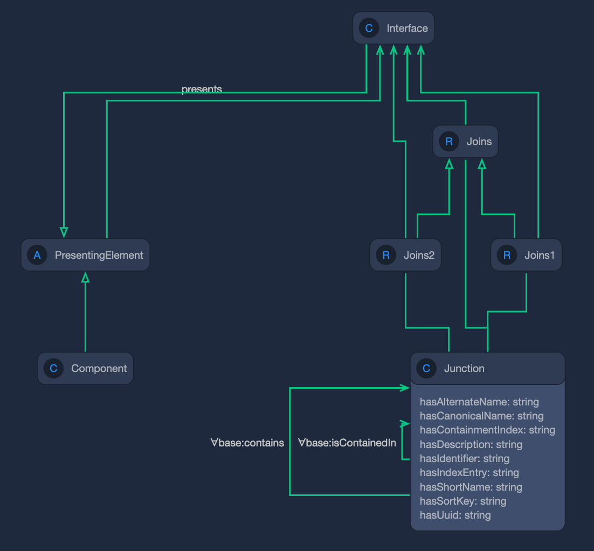

source("../../osr_common.R")7 Assembly Interface
7.1 Summary
This is a demonstration of vocabulary concept for the interface.
7.2 Methodology
7.3 Business Questions
7.4 Vocabulary
- mission:Interface
- mission:Presents
- mission:Junction

7.5 Descriptions
Pattern from kepler-16b
- [Component C1] [C1.presents.if01] [C1.if01]
- [Component C2] [C2.presents.if01] [C2.if01]
- [C1.C2.J1] [mission:Join1] [C1.if01]
- [C1.C2.J1] [mission:Join2] [C2.if01]
instance orbiter-spacecraft.telemetryOut : mission:Interface [
base:hasIdentifier "I.02"
base:hasCanonicalName "Telemetry Out"
]
relation instance orbiter-spacecraft.presents.telemetryOut : mission:Presents [
from components:orbiter-spacecraft
to orbiter-spacecraft.telemetryOut
]
instance orbiter-ground-data-system.telemetryIn : mission:Interface [
base:hasIdentifier "I.04"
base:hasCanonicalName "Telemetry In"
]
relation instance orbiter-ground-data-system.presents.telemetryIn : mission:Presents [
from components:orbiter-ground-data-system
to orbiter-ground-data-system.telemetryIn
]
relation instance orbiter-ground-data-system.orbiter-spacecraft.telemetry.downlink : mission:Junction [
from interfaces:orbiter-spacecraft.telemetryOut
to interfaces:orbiter-ground-data-system.telemetryIn
base:hasIdentifier "J.02"
base:hasCanonicalName "Orbiter Telemetry Downlink"
]
7.5.1 Automate Description Process
7.5.2 Import from github
Get information of interfaces from CAD Model
7.5.3 Get Assembly Descriptions from model
library(omlhashiR)
# oml_repository <- "../open-source-rover/"
oml_repository <- omlrepo
omlhashiR::oml_refresh()[1] "kill success for pid=24944"omlhashiR::oml_stop_Daemon(oml_repository)[1] "Stopping Daemon(s)" "1 Daemon stopped" omlhashiR::oml_build(oml_repository) [1] "Starting a Gradle Daemon, 29 stopped Daemons could not be reused, use --status for details"
[2] "> Task :omlZip UP-TO-DATE"
[3] "> Task :assemble UP-TO-DATE"
[4] "> Task :downloadDependencies UP-TO-DATE"
[5] "> Task :omlToOwl UP-TO-DATE"
[6] "> Task :owlReason UP-TO-DATE"
[7] "> Task :check UP-TO-DATE"
[8] "> Task :build UP-TO-DATE"
[9] ""
[10] "BUILD SUCCESSFUL in 3s"
[11] "4 actionable tasks: 4 up-to-date" omlhashiR::oml_startFuseki(oml_repository)[1] ""
[2] "> Task :startFuseki"
[3] "Fuseki server has now successfully started with pid=25351, listening on http://localhost:3030"
[4] ""
[5] "BUILD SUCCESSFUL in 3s"
[6] "1 actionable task: 1 executed" omlhashiR::oml_owlLoad(oml_repository)[1] "> Task :downloadDependencies UP-TO-DATE"
[2] "> Task :omlToOwl UP-TO-DATE"
[3] "> Task :owlReason UP-TO-DATE"
[4] ""
[5] "> Task :owlLoad"
[6] "Loaded 22 owl file(s), unloaded 0 owl file(s)"
[7] ""
[8] "BUILD SUCCESSFUL in 1s"
[9] "4 actionable tasks: 1 executed, 3 up-to-date" 7.6 Query
library(tansakusuR)
endpoint_url <- "http://localhost:3030/open-source-rover/sparql"query_string <-'
PREFIX base: <http://imce.jpl.nasa.gov/foundation/base#>
PREFIX mission: <http://imce.jpl.nasa.gov/foundation/mission#>
PREFIX structure: <http://opencaesar.io/open-source-rover/vocabulary/structure#>
PREFIX rdfs: <http://www.w3.org/2000/01/rdf-schema#>
SELECT DISTINCT ?c1_localname ?c1_id ?c1_name ?c1_type ?c2_localname ?c2_id ?c2_name
WHERE {
?c1 a structure:Assembly ;
base:hasIdentifier ?c1_id;
base:hasCanonicalName ?c1_name .
OPTIONAL{
?c1 base:isContainedIn ?c2 .
OPTIONAL{
?c2 base:hasIdentifier ?c2_id;
base:hasCanonicalName ?c2_name .
}
}
# Extract the local name
BIND(STRAFTER(STR(?c1), "#") AS ?c1_localname) .
BIND(STRAFTER(STR(?c2), "#") AS ?c2_localname) .
OPTIONAL {
?c1 a structure:System ;
BIND("structure:System" AS ?c1_type) .
}
OPTIONAL {
?c1 a structure:Subsystem ;
BIND("structure:Subsystem" AS ?c1_type) .
}
OPTIONAL {
?c1 a structure:Assembly ;
BIND("structure:Assembly" AS ?c1_type) .
}
OPTIONAL {
?c1 a structure:Part ;
BIND("structure:Part" AS ?c1_type) .
}
}
ORDER BY ?c2_localname
'
df_query <- tansakusuR::send_query(endpoint_url,query_string)
datatable(df_query, options = list(pageLength = 20))7.6.1 Create a workbook for define interfaces
df_worksheet <-data.frame(
c1 = "",
c2 = ""
)
df_worksheet <- df_worksheet %>%
add_row(c1 = "body-assembly", c2 = "rocker-bogie-suspension-assembly-1") %>%
add_row(c1 = "body-assembly", c2 = "rocker-bogie-suspension-assembly-2") %>%
add_row(c1 = "rocker-bogie-suspension-assembly-1", c2 = "corner-wheel-assembly-1") %>%
add_row(c1 = "rocker-bogie-suspension-assembly-1", c2 = "corner-wheel-assembly-4") %>%
add_row(c1 = "rocker-bogie-suspension-assembly-1", c2 = "drive-wheel-assembly-1") %>%
add_row(c1 = "rocker-bogie-suspension-assembly-2", c2 = "corner-wheel-assembly-2") %>%
add_row(c1 = "rocker-bogie-suspension-assembly-2", c2 = "corner-wheel-assembly-3") %>%
add_row(c1 = "rocker-bogie-suspension-assembly-2", c2 = "drive-wheel-assembly-2")
df_worksheet <- df_worksheet[-1,] %>%
mutate(junction_id = paste0("J.", sprintf("%03d", row_number()))) %>%
mutate(junction_name = paste0("junction", sprintf("%03d", row_number())))
df_worksheet c1 c2
2 body-assembly rocker-bogie-suspension-assembly-1
3 body-assembly rocker-bogie-suspension-assembly-2
4 rocker-bogie-suspension-assembly-1 corner-wheel-assembly-1
5 rocker-bogie-suspension-assembly-1 corner-wheel-assembly-4
6 rocker-bogie-suspension-assembly-1 drive-wheel-assembly-1
7 rocker-bogie-suspension-assembly-2 corner-wheel-assembly-2
8 rocker-bogie-suspension-assembly-2 corner-wheel-assembly-3
9 rocker-bogie-suspension-assembly-2 drive-wheel-assembly-2
junction_id junction_name
2 J.001 junction001
3 J.002 junction002
4 J.003 junction003
5 J.004 junction004
6 J.005 junction005
7 J.006 junction006
8 J.007 junction007
9 J.008 junction0087.6.2 Generate Description of interface and junction
# Generate color table
look <- data.frame(
assembly = df_query$c1_localname,
id = df_query$c1_id
)
# Set Colors
df_tidy <-df_worksheet %>%
mutate(id = look$id[match(unlist(df_worksheet$c1), look$assembly)])# sourceの種類ごとにidを振る関数
set_id <- function(source,source_id) {
# sourceの値をindexに変換
index <- "IF."
# 連番を生成
number <- seq_along(source)
# sprintf関数でゼロ埋めする
number_padded <- sprintf("%03d", number)
# indexとnumberを結合してidを返す
paste0(index, source_id, ".", number_padded)
}# sourceの種類ごとにidを振る関数
set_interface_name <- function(source,source_id) {
# sourceの値をindexに変換
index <- ".if"
# 連番を生成
number <- seq_along(source)
# sprintf関数でゼロ埋めする
number_padded <- sprintf("%03d", number)
# indexとnumberを結合してidを返す
paste0(source, index, number_padded)
}# sourceの種類ごとにidを振る関数
set_presents_interface_name <- function(source,source_id) {
# sourceの値をindexに変換
index <- ".if"
# 連番を生成
number <- seq_along(source)
# sprintf関数でゼロ埋めする
number_padded <- sprintf("%03d", number)
# indexとnumberを結合してidを返す
paste0(source, ".presents", index, number_padded)
}df_tidy <- data.frame(
source = df_worksheet$c1,
target = df_worksheet$c2,
junction = df_worksheet$junction_id
) %>%
add_row(source = df_worksheet$c2, target = df_worksheet$c1, junction=df_worksheet$junction_id)
df_tidy <- df_tidy %>%
mutate(source_id = look$id[match(unlist(df_tidy$source), look$assembly)]) %>%
mutate(target_id = look$id[match(unlist(df_tidy$target), look$assembly)]) %>%
arrange(source_id) %>%
# sourceの種類ごとにグループ化する
group_by(source) %>%
# 新しい列にidを振る
mutate(interface_id = set_id(source,source_id)) %>%
mutate(interface_name = set_interface_name(source,source_id)) %>%
mutate(interface_presents = set_presents_interface_name(source,source_id)) %>%
# グループ化を解除する
ungroup()7.6.3 Initialize OML File
outputdir <- paste0(omlrepo,"src/oml/opencaesar.io/open-source-rover/description/assembly/")
outputfile <- paste0(outputdir, "interface.oml")
init_oml_file <-
"description <http://opencaesar.io/open-source-rover/description/assembly/interface.oml#> as interface {\n}\n"
cat(file=outputfile, init_oml_file)7.6.4 Generate framework of interface.oml
omldescriptions <-
"description <http://opencaesar.io/open-source-rover/description/assembly/interface#> as interface {
uses <http://imce.jpl.nasa.gov/foundation/base#> as base
uses <http://imce.jpl.nasa.gov/foundation/mission#> as mission
extends <http://opencaesar.io/open-source-rover/description/assembly/assembly#> as assembly
"7.6.5 Function to generate structure:Part descriptions
instance AssyA1.if02 : mission:Interface[
base:hasIdentifier "IF.A.01.02"
base:hasCanonicalName "A1 IF02"
]
relation instance AssyA1.presents.if01 : mission:Presents[
from AssyA1
to AssyA1.if01
]
generateInterfaceDescriptions <- function(df, header){
df_in <- df
text <- paste0("// ", header, "\n")
text_instance <- ""
text_ref <- ""
# id_count <- 1
type <- "mission:Interface"
ref_type <- "mission:Presents"
for (i in 1:nrow(df_in)){
# index <- "A"
# id <- paste0(index, ".", formatC(i, width = 2, flag="0"))
text_instance <- paste0(text_instance,
" instance ", df_in$interface_name[i], " : ", type, " [","\n",
" base:hasIdentifier \"", df_in$interface_id[i],"\"\n",
" ]\n"
)
text_ref <- paste0(text_ref,
" relation instance ", df_in$interface_presents[i], " : ", ref_type, " [","\n",
" from assembly:", df_in$source[i],"\n",
" to ", df_in$interface_name[i],"\n",
" ]\n"
)
}
# text_ref <- paste0(text_ref,
# " ]\n\n"
# )
text <- paste0(text, text_instance, text_ref)
return(text)
}header <- c("Interface - Assembly")
instance <- generateInterfaceDescriptions(df_tidy, header)
omldescriptions <- paste0(omldescriptions, instance,"\n")generateJunctionDescriptions <- function(df, header){
df_in <- df
text <- paste0("// ", header, "\n")
text_instance <- ""
text_ref <- ""
# id_count <- 1
type <- "mission:Junction"
for (i in 1:nrow(df_in)){
# index <- "A"
# id <- paste0(index, ".", formatC(i, width = 2, flag="0"))
text_instance <- paste0(text_instance,
" instance ", df_in$junction_name[i], " : ", type, " [","\n",
" mission:joins1 ", df_in$join1[i],"\n",
" mission:joins2 ", df_in$join2[i],"\n",
" ]\n"
)
}
# text_ref <- paste0(text_ref,
# " ]\n\n"
# )
text <- paste0(text, text_instance, text_ref)
return(text)
}7.6.6 Create Junction join1 and join2
df_junction <- df_worksheet %>%
left_join(df_tidy, by =c("junction_id" = "junction", "c1" = "source"), keep=FALSE) %>%
mutate(join1 = interface_name) %>%
select(c(colnames(df_worksheet),"join1")) %>%
left_join(df_tidy, by =c("junction_id" = "junction", "c2" = "source"), keep=FALSE) %>%
mutate(join2 = interface_name) %>%
select(c(colnames(df_worksheet),"join1","join2"))header <- c("Junction - Join")
instance <- generateJunctionDescriptions(df_junction, header)
omldescriptions <- paste0(omldescriptions, instance,"\n")7.7 Generate OML File
omldescriptions <- paste0(omldescriptions,"\n}\n")
cat(omldescriptions)description <http://opencaesar.io/open-source-rover/description/assembly/interface#> as interface {
uses <http://imce.jpl.nasa.gov/foundation/base#> as base
uses <http://imce.jpl.nasa.gov/foundation/mission#> as mission
extends <http://opencaesar.io/open-source-rover/description/assembly/assembly#> as assembly
// Interface - Assembly
instance body-assembly.if001 : mission:Interface [
base:hasIdentifier "IF.A.01.001"
]
instance body-assembly.if002 : mission:Interface [
base:hasIdentifier "IF.A.01.002"
]
instance drive-wheel-assembly-1.if001 : mission:Interface [
base:hasIdentifier "IF.A.02.001"
]
instance drive-wheel-assembly-2.if001 : mission:Interface [
base:hasIdentifier "IF.A.03.001"
]
instance corner-wheel-assembly-1.if001 : mission:Interface [
base:hasIdentifier "IF.A.04.001"
]
instance corner-wheel-assembly-2.if001 : mission:Interface [
base:hasIdentifier "IF.A.05.001"
]
instance corner-wheel-assembly-3.if001 : mission:Interface [
base:hasIdentifier "IF.A.06.001"
]
instance corner-wheel-assembly-4.if001 : mission:Interface [
base:hasIdentifier "IF.A.07.001"
]
instance rocker-bogie-suspension-assembly-1.if001 : mission:Interface [
base:hasIdentifier "IF.A.08.001"
]
instance rocker-bogie-suspension-assembly-1.if002 : mission:Interface [
base:hasIdentifier "IF.A.08.002"
]
instance rocker-bogie-suspension-assembly-1.if003 : mission:Interface [
base:hasIdentifier "IF.A.08.003"
]
instance rocker-bogie-suspension-assembly-1.if004 : mission:Interface [
base:hasIdentifier "IF.A.08.004"
]
instance rocker-bogie-suspension-assembly-2.if001 : mission:Interface [
base:hasIdentifier "IF.A.09.001"
]
instance rocker-bogie-suspension-assembly-2.if002 : mission:Interface [
base:hasIdentifier "IF.A.09.002"
]
instance rocker-bogie-suspension-assembly-2.if003 : mission:Interface [
base:hasIdentifier "IF.A.09.003"
]
instance rocker-bogie-suspension-assembly-2.if004 : mission:Interface [
base:hasIdentifier "IF.A.09.004"
]
relation instance body-assembly.presents.if001 : mission:Presents [
from assembly:body-assembly
to body-assembly.if001
]
relation instance body-assembly.presents.if002 : mission:Presents [
from assembly:body-assembly
to body-assembly.if002
]
relation instance drive-wheel-assembly-1.presents.if001 : mission:Presents [
from assembly:drive-wheel-assembly-1
to drive-wheel-assembly-1.if001
]
relation instance drive-wheel-assembly-2.presents.if001 : mission:Presents [
from assembly:drive-wheel-assembly-2
to drive-wheel-assembly-2.if001
]
relation instance corner-wheel-assembly-1.presents.if001 : mission:Presents [
from assembly:corner-wheel-assembly-1
to corner-wheel-assembly-1.if001
]
relation instance corner-wheel-assembly-2.presents.if001 : mission:Presents [
from assembly:corner-wheel-assembly-2
to corner-wheel-assembly-2.if001
]
relation instance corner-wheel-assembly-3.presents.if001 : mission:Presents [
from assembly:corner-wheel-assembly-3
to corner-wheel-assembly-3.if001
]
relation instance corner-wheel-assembly-4.presents.if001 : mission:Presents [
from assembly:corner-wheel-assembly-4
to corner-wheel-assembly-4.if001
]
relation instance rocker-bogie-suspension-assembly-1.presents.if001 : mission:Presents [
from assembly:rocker-bogie-suspension-assembly-1
to rocker-bogie-suspension-assembly-1.if001
]
relation instance rocker-bogie-suspension-assembly-1.presents.if002 : mission:Presents [
from assembly:rocker-bogie-suspension-assembly-1
to rocker-bogie-suspension-assembly-1.if002
]
relation instance rocker-bogie-suspension-assembly-1.presents.if003 : mission:Presents [
from assembly:rocker-bogie-suspension-assembly-1
to rocker-bogie-suspension-assembly-1.if003
]
relation instance rocker-bogie-suspension-assembly-1.presents.if004 : mission:Presents [
from assembly:rocker-bogie-suspension-assembly-1
to rocker-bogie-suspension-assembly-1.if004
]
relation instance rocker-bogie-suspension-assembly-2.presents.if001 : mission:Presents [
from assembly:rocker-bogie-suspension-assembly-2
to rocker-bogie-suspension-assembly-2.if001
]
relation instance rocker-bogie-suspension-assembly-2.presents.if002 : mission:Presents [
from assembly:rocker-bogie-suspension-assembly-2
to rocker-bogie-suspension-assembly-2.if002
]
relation instance rocker-bogie-suspension-assembly-2.presents.if003 : mission:Presents [
from assembly:rocker-bogie-suspension-assembly-2
to rocker-bogie-suspension-assembly-2.if003
]
relation instance rocker-bogie-suspension-assembly-2.presents.if004 : mission:Presents [
from assembly:rocker-bogie-suspension-assembly-2
to rocker-bogie-suspension-assembly-2.if004
]
// Junction - Join
instance junction001 : mission:Junction [
mission:joins1 body-assembly.if001
mission:joins2 rocker-bogie-suspension-assembly-1.if004
]
instance junction002 : mission:Junction [
mission:joins1 body-assembly.if002
mission:joins2 rocker-bogie-suspension-assembly-2.if004
]
instance junction003 : mission:Junction [
mission:joins1 rocker-bogie-suspension-assembly-1.if001
mission:joins2 corner-wheel-assembly-1.if001
]
instance junction004 : mission:Junction [
mission:joins1 rocker-bogie-suspension-assembly-1.if002
mission:joins2 corner-wheel-assembly-4.if001
]
instance junction005 : mission:Junction [
mission:joins1 rocker-bogie-suspension-assembly-1.if003
mission:joins2 drive-wheel-assembly-1.if001
]
instance junction006 : mission:Junction [
mission:joins1 rocker-bogie-suspension-assembly-2.if001
mission:joins2 corner-wheel-assembly-2.if001
]
instance junction007 : mission:Junction [
mission:joins1 rocker-bogie-suspension-assembly-2.if002
mission:joins2 corner-wheel-assembly-3.if001
]
instance junction008 : mission:Junction [
mission:joins1 rocker-bogie-suspension-assembly-2.if003
mission:joins2 drive-wheel-assembly-2.if001
]
}cat(file=outputfile, omldescriptions)```